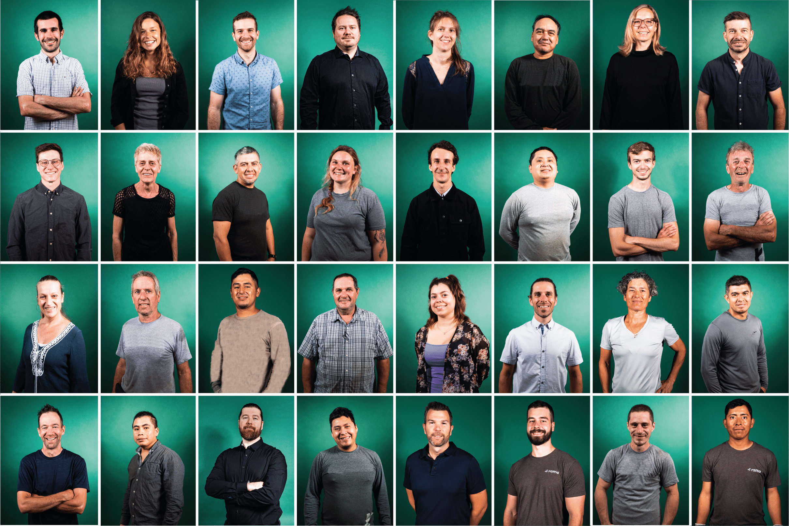
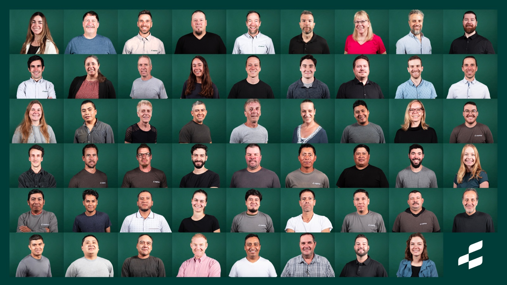

20 ans à mettre le saule au service de l'environnement.
Fondée en 2006 à Saint-Roch-de-l'Achigan, Ramo est devenue la référence nord-américaine des phytotechnologies à base de saule. De la pépinière au chantier, nous concevons et déployons des solutions végétales qui restaurent, protègent et valorisent les territoires — partout en Amérique du Nord.
Notre mission est simple : mettre la nature au service de l'environnement. Nous croyons que les solutions basées sur la nature sont les plus efficaces, les plus durables et les plus économiques pour répondre aux défis environnementaux de notre époque — et 20 ans de terrain nous confirment qu'elles tiennent leurs promesses.
75 passionnés d'environnement

Une équipe pluridisciplinaire unique
Biologistes, ingénieurs, agronomes, techniciens de terrain — notre équipe combine des expertises complémentaires pour concevoir et déployer les meilleures solutions végétales.
Chaque membre de l'équipe partage une même conviction : la nature détient les meilleures solutions pour protéger l'environnement. C'est cette passion commune qui nous pousse à innover et à repousser les frontières de la phytotechnologie.
20 ans de saules, d'essais et de terrain
Nos récompenses
20 ans de travail reconnus par l'industrie, la communauté scientifique et nos pairs.
Canada's Clean50 — 2026
Reconnaissance nationale pour notre contribution à l'économie environnementale et au développement durable.
Prix d'excellence CPEQ — 2024
Lauréat dans la catégorie Innovation environnementale pour le déploiement de phytotechnologies en milieu industriel.
Prix Novae — Entreprise à impact — 2023
Mention spéciale pour la filière saule, modèle d'économie circulaire appliquée aux enjeux de l'eau et du sol.
Mercure — Développement durable PME — 2019
Remis par la FCCQ pour notre capacité à conjuguer croissance et solutions basées sur la nature.
Vous avez un projet environnemental ?
Discutons ensemble de la meilleure solution basée sur la nature pour répondre à vos défis.
Nous joindre